← 返回阅读库 · 原论文目录
论文讲解阅读文档 · 多模态语言模型 · v033
VoxPoser: Composable 3D Value Maps for Robotic Manipulation with Language Models
视频时长 00:13:03；讲解文字 5,913 字符；提取讲解画面 45 张。按视频原顺序阅读，每段文字保留时间戳。
文字来自整段视频的自动语音转写，按自然停顿分段，并与 PPT / 论文页面 / 演示画面对齐。未将讲解压缩为摘要；术语、数字和口述公式请结合画面及原论文核对。 阅读稿已校正规范部分明确术语误识别；原始逐字稿和每处修改记录另行保留。
讲解画面为源视频截图（640×360），不是可编辑 PPT 文件。全片按每秒 2 帧扫描内容变化，逐步展开页保留；连续动画保留代表画面。清晰度受源视频限制。
下载完整资料包 · 含离线 HTML、PDF、Word、全部 PPT 画面和字幕。
原论文与材料
VoxPoser: Composable 3D Value Maps for Robotic Manipulation with Language Models · 下载完整 PDF（23 页）
按时间阅读
00:00:00–00:00:16 · 画面 001
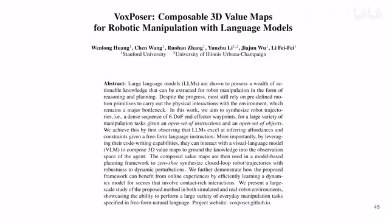
00:00:00–00:00:16 · 画面 001大家好,今天我们来快速梳理一篇论文 VoxPoser: Composable 3D Value Maps for Robotic Manipulation with Language Models那这篇论文呢一样是用这个 language model去做这个机器人具体说是这个机械臂的这个控制那但是呢它区别于我们之前说的这个 SayCan
00:00:16–00:02:07 · 画面 002
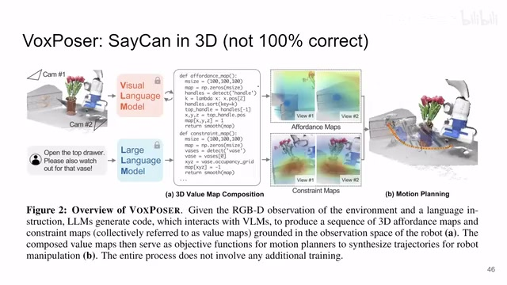
00:00:16–00:02:07 · 画面 002区别于我们之前说的这个 code as policies虽然我都没出过视频但是你应该知道这个两篇工作我们继续来看你像在 SayCan 里面呢它是用一个非常高层次的这个 value function这个 value function 呢具体说是个 value你是针对每一个动作来去复制的比如说我抓起一个这个海绵来它的这个 value 是多少我去抓起一个苹果来它的 value 是多少它是这种高层次的这个动作来对应有这么一个值然后呢你基于所有可行的动作的这些值你就选一个值最高的动作去做嘛
这个是 SayCan那 code as policies 更简单了对吧就是用 language model 去生成一段代码然后让这个机器人直接去执行这个代码就可以了那么 VoxPoser 呢这篇文章区别于之前的这两个工作就是它是同样是用这个 language model 去生成一段代码但是这个代码呢不是直接去执行的而这个代码呢是帮助我们去生成整个一个空间中的一个 cost map然后呢我们在这个空间中的 cost map 中找一个这个 trajectory这个 trajectory 呢
它能够让我们的所有的 cost 最低这样子呢就达到一个规划的这个目的你在找的过程中也是使用传统的工具对吧所以说你可以理解为它是一个 3D 版的或者更加更加稠密的这么一个这个 SayCan或者你也可以把它理解成是一个meta 版的 code as policy那么这个呢是本文核心的一个工作那当然了你看到立体空间中的这个 cost它不一定只有一个对吧你看这里这种情况就是我想去打开这个抽屉但是呢，同时我们要避开这个花瓶对吧？所以看到这个抽屉这边这个 cost 是极低的但是花瓶这边 cost 就极高
所以你在优化的时候最终找到这一条轨迹它是避开这个花瓶它去打开这个抽屉那么这个呢就是本文的这个核心的思想下面呢我们来看它具体的实现
00:02:07–00:02:38 · 画面 003
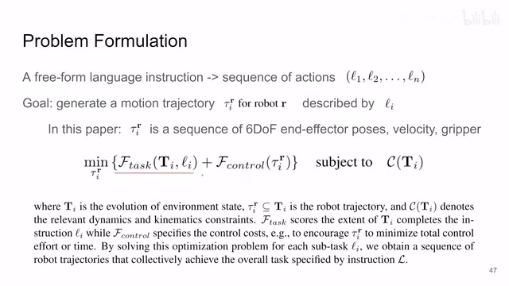
00:02:07–00:02:38 · 画面 003首先这个问题的定义呢基本就是跟原来一样的也都是人给的一个高度抽象的语言不详的这么一句话其实是一个特定的任务然后呢 Language Model 具体来说这里就是这个 GPT-4用它呢来拆成一个个的这个 instruction也或者说一个个小的 action就把大象装进冰箱需要几步需要三步，第一步把冰箱门打开第二步把大象塞进去第三步把冰箱门关上就是这样的任务这样的分解然后呢这 action 就去做吧对吧然后就像我们之前说的我们有一个空间尺度的
00:02:38–00:02:39 · 画面 004
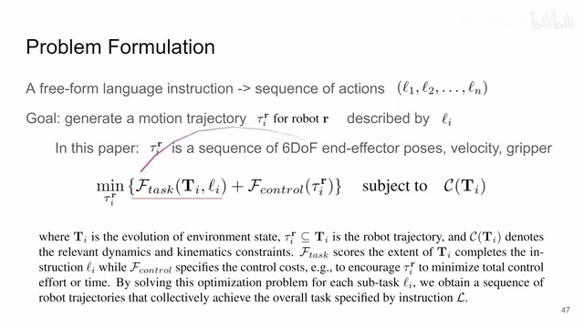
00:02:38–00:02:39 · 画面 00400:02:39–00:03:51 · 画面 005
00:02:39–00:03:51 · 画面 005这么一个一个 cost map然后在这个空间里面去找一条cost 最小的这个 trajectory 就可以了那注意呢这里呢这个它这个空间呢它并不是一个 3D 的空间啊因为我们要规划的是这个这个机械臂加上最后那个 gripper首先它的这个六个自由度的这个位置加上朝向你得规划吧然后呢同时呢我们又希望它的速度限制在一定的层次然后呢，我们又希望它的 gripper 的开启和关闭在我们规划当中所以这些东西也就是我们的 action space啊，构成了我们这个 VoxPoser它需要的这个 reward function
也就是说，你的 action 进来然后查到一个 reward 出去这个就是我们的 value function 嘛这就是我们要生成的东西那接下来说这个 value function 里面它包含什么呢啊这里有两部分一部分跟任务相关的就是具体我做哪个任务对吧我就去我就用这个 reward 去指引我的这个机械人去完成这个任务这个是相对好理解的那还有第二部分叫 control，就是机器人你在运动的时候它固有的比如说移动一段距离我希望它移动的距离小我希望它消耗的能量低等等这种固有的这种 cost，这个你是确定好一个机器人确定好它怎么走之后它是一个固定的一个值，那么这个呢也是另一个约束，那最终呢你就是在这两个约束都考虑的情况下去解除一个优化的问题吧，你优化的空间其实就是你的 action space，那么这个呢就是本文的一个核心的思路
00:03:51–00:03:53 · 画面 006
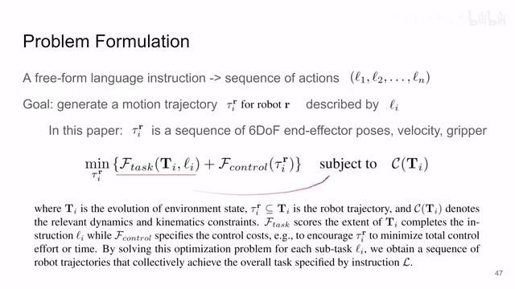
00:03:51–00:03:53 · 画面 00600:03:53–00:03:58 · 画面 007
00:03:53–00:03:58 · 画面 00700:03:58–00:03:59 · 画面 008
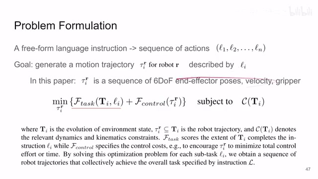
00:03:58–00:03:59 · 画面 00800:03:59–00:04:01 · 画面 009
00:03:59–00:04:01 · 画面 009那么刚刚说了这么多，你说一定要用严谨的方法来看的话，那就是这些数学表达呢，我们也他也没有什么数学，就是这些符号的表达，那么重点就是本文区别于其他之前的所有的方法，他的这个 VoxelMap 首先他有一个 VoxelMap，然后呢这个 VoxelMap 是 Python 代码来构建的
00:04:01–00:04:22 · 画面 010
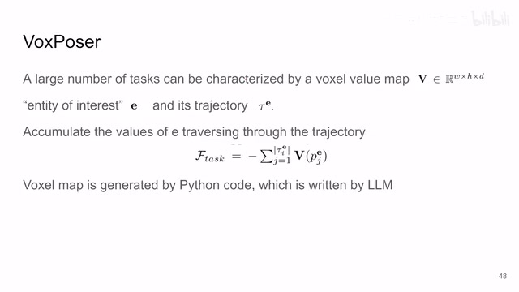
00:04:01–00:04:22 · 画面 010而这个 Python 代码呢是这个 language model 来写的，这个呢就是本文的这个核心的贡献，下面我们具体来看啊，为了让这个 language model 写出这个 Python 代码来，作者需要给他一些什么 API 呢，其实也非常简单，就是你有一个这个 Vision language model，你有视觉的部分能够把你的图像处理成你有用的信息，然后呢你还需要做一些 Python 里面这个 numpy 的这些矩阵的这些操作，然后最后呢你可能根据某些情况你可能要
00:04:22–00:04:24 · 画面 011
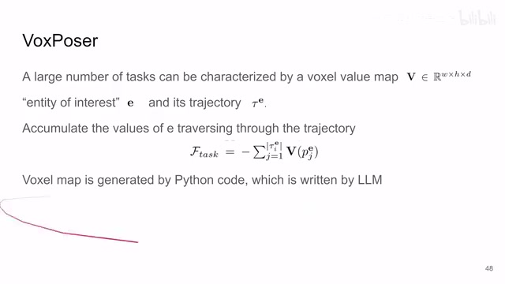
00:04:22–00:04:24 · 画面 01100:04:24–00:04:29 · 画面 012
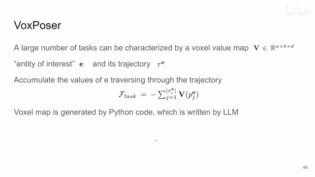
00:04:24–00:04:29 · 画面 01200:04:29–00:04:53 · 画面 013
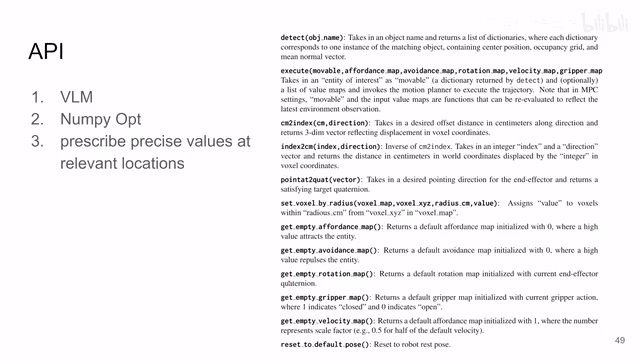
00:04:29–00:04:53 · 画面 013移动多少厘米多到一个距离这种相对位置的移动，你也需要有一个 API，这些呢是作者的提供的 API，感兴趣的朋友呢你到原文里面看一下就好，那么拿到这些 API 就让 GPT 开始写吧，GPT 拿着这些 API 开开心心的就往冰箱去了，打开冰箱哎 ，箱子怎么在里面啊，不对，那应该就是 GPT 带着老婆开着车就到亮铺镇了，然后他就开始写了对不对，那这里呢作者的输入呢
00:04:53–00:04:55 · 画面 014
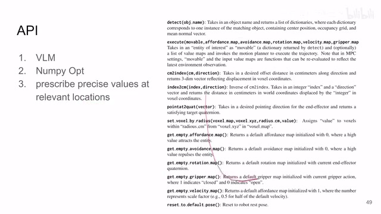
00:04:53–00:04:55 · 画面 01400:04:55–00:05:11 · 画面 015
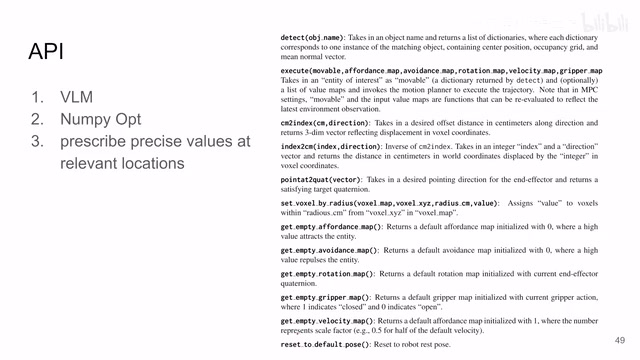
00:04:55–00:05:11 · 画面 01500:05:11–00:05:36 · 画面 016
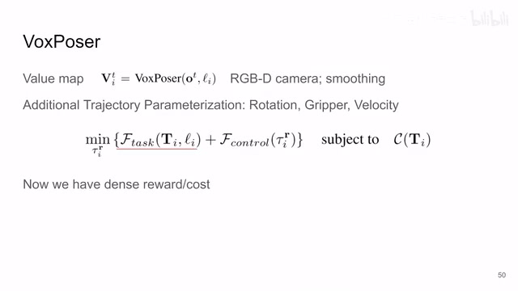
00:05:11–00:05:36 · 画面 016这个 RGBD 的这个图像就是这个 observation 啊，然后呢我们的每一个小的这个 instruction 在这里面，而这两个扔进去之后交给我们的 VoxPoser 写吧对吧，language model 把这个 instruction 变成 Python 代码，然后呢 Python 代码加上这个 observation 执行吧，执行出来之后就得到一个这个立体的这么一个 value map，那这个东西呢算出来的
00:05:36–00:05:37 · 画面 017
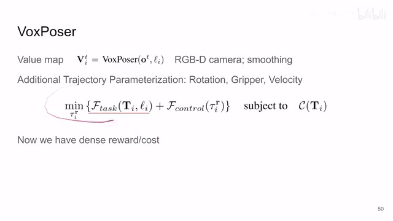
00:05:36–00:05:37 · 画面 017就是这个 task 的部分
00:05:37–00:05:46 · 画面 018
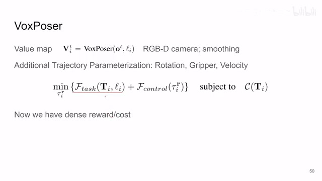
00:05:37–00:05:46 · 画面 018control 这个部分对吧还是我们说的你根据你机器人本身的性质往上加就可以了最终我们就很简单的就把这么一个 cost function
00:05:46–00:05:48 · 画面 019
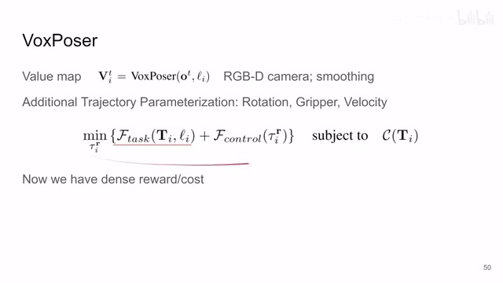
00:05:46–00:05:48 · 画面 019或者就是这个 reward 方式
00:05:48–00:05:57 · 画面 020
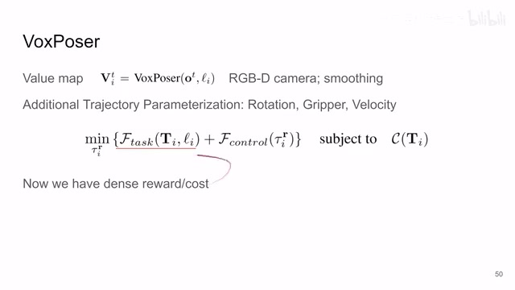
00:05:48–00:05:57 · 画面 020给它构建出来了区别于之前它是一个在空间上非常稠密的查每一个 action它都有这么一个值它都会给你这么一个值的
00:05:57–00:06:00 · 画面 021
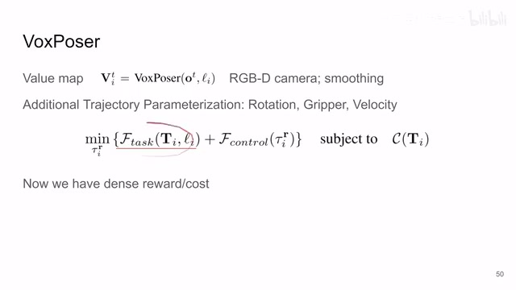
00:05:57–00:06:00 · 画面 021这么一个 cost function现在我们有一个 cost function
00:06:00–00:06:34 · 画面 022
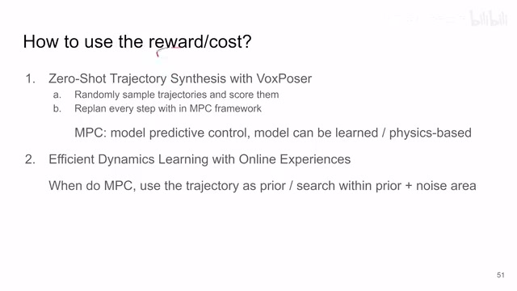
00:06:00–00:06:34 · 画面 022我们应该怎么用它呢非常简单第一个用法作者叫它这个zero-shot 的 trajectory synthesis你随机采几个 trajectory挑一个 cost 最小的就结束了你用一个一般的优化方法去解它就好了注意这个东西它是可以发生在每一步的就是说你拿到一张图像你就可以做一个 cost map你就可以做这个 reward function你就可以做这个 work through map work through value whatever你都可以做这个东西然后你去优化一下找出一个轨迹来
你下一个时刻你又进来一个 observation你重新再做一遍一样的这就是说你可以每一步都去重新做这个事情
00:06:34–00:06:35 · 画面 023
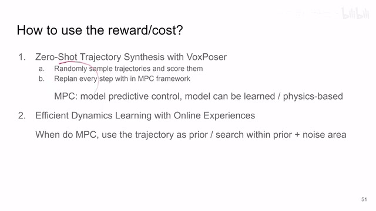
00:06:34–00:06:35 · 画面 02300:06:35–00:07:34 · 画面 024
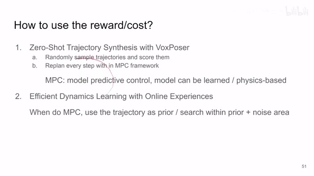
00:06:35–00:07:34 · 画面 024那么在这个重新做的基础上作者还用了这个 MPC MPC 就是 model predictive control简单来说就是你维护一个 model这个 model 就像你了解 model-based reinforcement learning 的朋友对吧就是 model-based 里面这个 model就是 model 是什么就是你拿到你当前的这个 state拿到你当前的这个 action它能够这个 model 能够告诉你未来的一个 state 是什么样就是一个先知你告诉他你现在的情况
你要干什么然后这先知会告诉你未来会发生什么这也就意味着他可以帮你去看不同的时间线对吧你去在相同的这个当前这个 state 状态下你去执行不同的动作你都会得到哪样的 state都会得到哪样的回报然后呢根据这些所有的预测未来之后你找一个最靠谱的收益最高的这个轨迹去做就好了这个就是 MPC那么这个 model 呢当然你就很自由了对吧你可以是一个网络去训练出来的也可以是真正的根据你的机器人的这个物理的法则对吧你动一个关节这里移动多少角度这个算出来的这都是很自由的这个无所谓的
00:07:34–00:07:36 · 画面 025
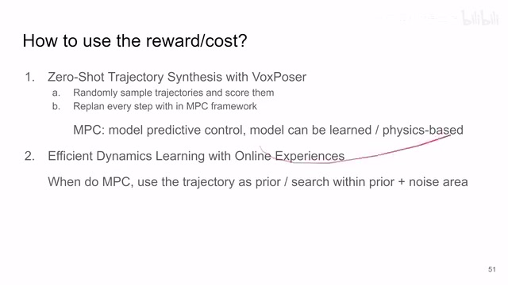
00:07:34–00:07:36 · 画面 025这个然后这个呢是这个 Zero-shot Trajectory Synthesis
00:07:36–00:08:32 · 画面 026
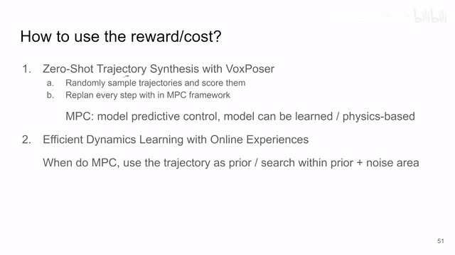
00:07:36–00:08:32 · 画面 026那么当然我们看到 MPC 里面对吧我们说了我们最好的情况下是要把所有可能的 action 都遍历一遍然后找到一个最好的这个方法对吧那实际上你的计算不可能允许你这么做那为了解决这个问题呢作者说啊我既然有了不是我自己能已经规划出一个 trajectory对吧我就把这个 trajectory 作为 prior作为一个先验的知识作为一个 guidance我把它扔到我们这个 MPC 的搜索过程中也就是说你具体在搜索的时候呢只搜索在这个 trajectory 附近的一小块区域就当于局部做一个小的优化就可以了
这样子呢就大大减少了你需要搜索的整个空间就让你执行的时候呢走得更快一点那么到这里呢本文的这个整个的技术路线就就已经结束了对吧非常直接的一个路线。因为你全都是掉了大模型，也没有自己训练的东西，整个就是非常直接的粘起来就完了。那下面我们来看它具体的实现。
00:08:32–00:08:44 · 画面 027
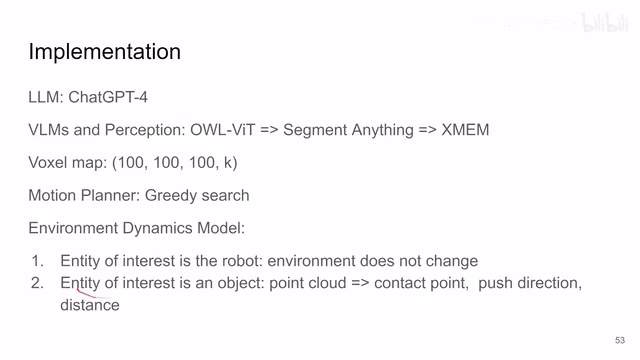
00:08:32–00:08:44 · 画面 027这个 language model我们之前说了拆 GPT-4然后呢它的这个 vision language model很有意思那首先是用这个 OWL-ViT是一个 open world detector把你图片中想要的物体，给它检测出来检测出来之后
00:08:44–00:08:45 · 画面 028
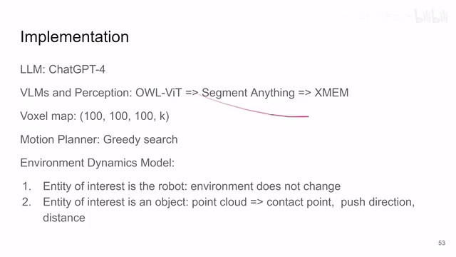
00:08:44–00:08:45 · 画面 028扔到这个 Segment Anything 里面
00:08:45–00:08:55 · 画面 029
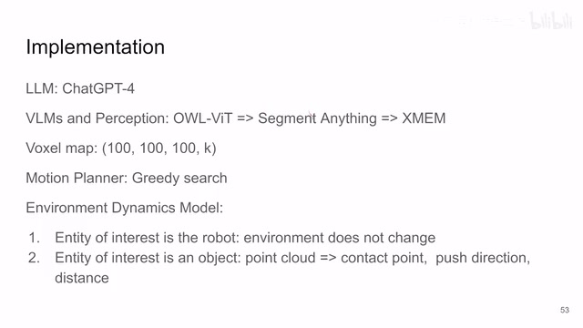
00:08:45–00:08:55 · 画面 029分割一下分割出来然后再过这个 XMEM对吧在整个视频里面整个再 tracking 一下你看用了这么多模型，真的是把范围到嘴边了。
00:08:55–00:08:56 · 画面 030
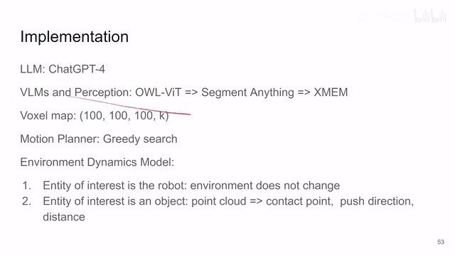
00:08:55–00:08:56 · 画面 030那 VoxelMap 对吧
00:08:56–00:09:22 · 画面 031
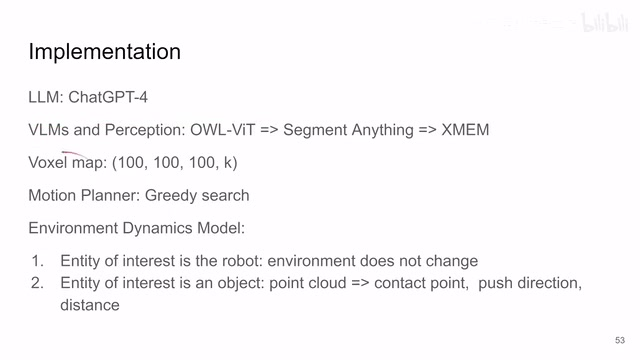
00:08:56–00:09:22 · 画面 031它的空间尺度是 100x100x100 的，然后这个 K 呢就可能包括它的这个爪子的朝向啊，它的这个速度啊还有它开闭啊等等这些东西这些信息都在里面，当然你实际 100x100x100这么一个分辨率它肯定是不能够满足，你实际的控制的需要的，所以你实际算出来这个之后呢，还要给它再生产量，给它插值到整个空间里嘛。这个是 VoxelMap然后呢
00:09:22–00:09:23 · 画面 032
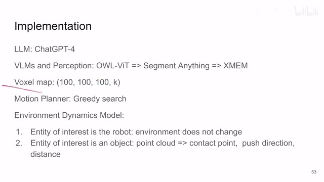
00:09:22–00:09:23 · 画面 032这个 MotionPlanner
00:09:23–00:09:27 · 画面 033
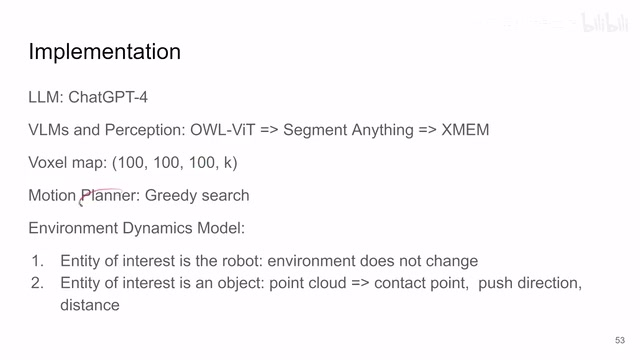
00:09:23–00:09:27 · 画面 033就是 MPC 嘛这里用的是贪婪搜索，这个都好说那注意这里啊
00:09:27–00:09:49 · 画面 034
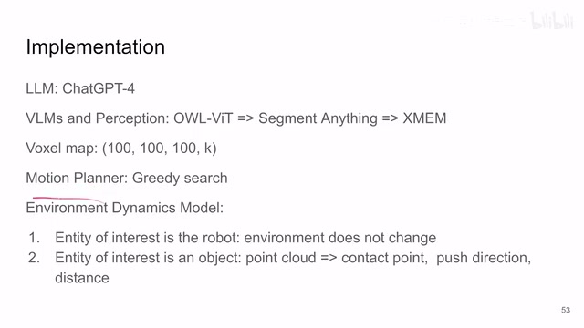
00:09:27–00:09:49 · 画面 034这个 EnvironmentDynamicsModel这个是什么意思就是我们知道 MPC 里面，我们要建 Model 嘛这个 Model 呢它是应该包含我们自己，这个 Robot 本身的 State 的变化，同时呢最理想的情况下它应该也是包含这个环境的变化，这样你把所有的东西都考虑到位了都预测到了你才好做下一步的规划但是呢实际上呢你这个周围环境的东西它怎么那么好预测呢那这里呢作者就说了啊我们分两种情况一种情况呢是当我们的这个任务我们的这个 Voxel Map 是针对这个机器人本身来构建的比如说这个任务就是移动机器人从某一个位置移动到另一个位置这个时候没有跟环境的交互那你这个时候环境就不变了就好了我们假设这个环境呢是不变的。
00:09:49–00:10:33 · 画面 035
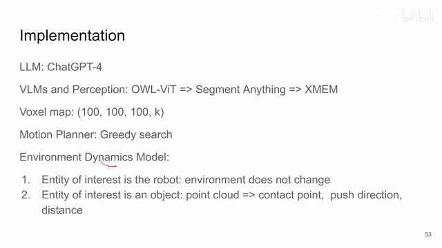
00:09:49–00:10:33 · 画面 035然后呢假如说你的这个环境真的有交互了那这里呢作者就有用一个模型啊他呢把这个观察到点云信息因为用的是 RGBD 相机嘛观察到的点云信息给他提取出来这个机器人和这个物体他们接触的点推或者拉的这个方向然后呢推拉的这个距离是一个非常取巧的简化版的这么一个 model 啊那这个呢是本文的具体的实现的细节。
00:10:33–00:10:34 · 画面 036
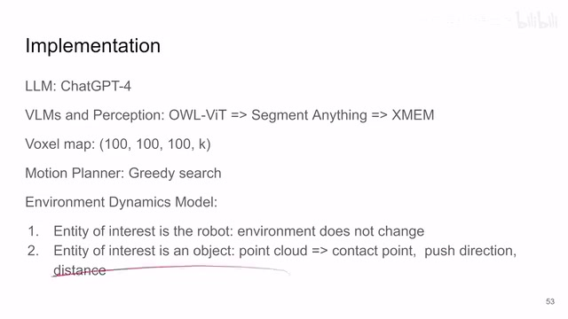
00:10:33–00:10:34 · 画面 03600:10:34–00:10:39 · 画面 037
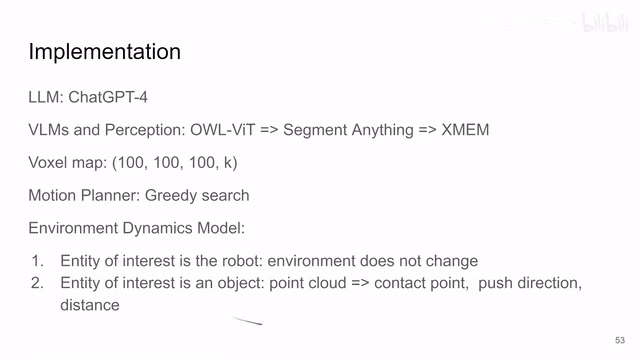
00:10:34–00:10:39 · 画面 03700:10:39–00:11:17 · 画面 038
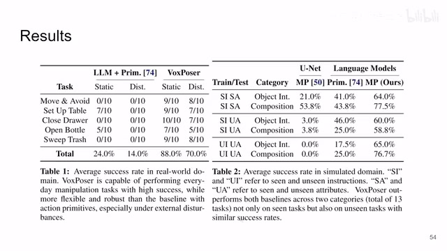
00:10:39–00:11:17 · 画面 038下面我们来看一些结果吧这里作者测试了一些真实环境里面的任务这个是虚拟环境里面的任务我们先看这边那左边这个 IOM 加 PRIM 就是一个这个 code as policies 的变种就是让这个 IOM model 直接去生成一系列的这个非常底层的这个控制的动作这个是你看到成功率很低的这个是本文的方法那右边这个呢模拟的环境见过或者没见过情况这边抓了一个 unetunet 去根据我们的图像去预测这个 virtual map。
这边呢是 language model base 的啊这边是这个 code as policies 这边是本文方法感兴趣的朋友呢你可以具体看他的这个实验的配置那另一部分的实验呢就是这个 dynamics model 的这个作用啊你看到呢这个一开始 zero shot 就是一开始我们说的没有这个 dynamics model 我们直接做 zero zero shot 的这个 trajectory 的生成我们直接通过优化方法找到这个 trajectory 看到这个成功率还是很低的啊这个轨迹出来其实并不好啊如果呢我们在这个基础上用这个 dynamics model。
00:11:17–00:11:55 · 画面 039
00:11:17–00:11:55 · 画面 039我们用了 MPC 那么它的这个成功率上来了但是呢超时因为它要把所有的动作空间 action space 都都搜一遍对吧那现在我们再把这个 Zozo 里面生成的轨迹作为 prior 送到这个 MPC 里面现在终于时间也是一个合适的时间成功率也是很高的那么这个是这么一个情况那这边呢是一个错误的继续的细分。
00:11:55–00:11:56 · 画面 040
00:11:55–00:11:56 · 画面 04000:11:56–00:12:03 · 画面 041
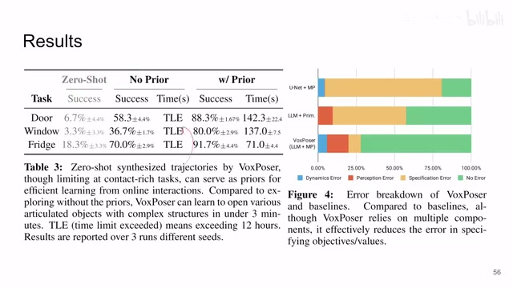
00:11:56–00:12:03 · 画面 041就是具体每一种方法啊到底是哪一个模块出错了呢那感兴趣的朋友呢可以去看一下那么最后呢也是一些最新奇的观察呢就是啊我们发现这个 language model 啊它介入之后呢它会有一些神奇的性质比如说呢它可以判断说哪一个这个 block 是更沉的对吧就判断一些物理上的属性然后呢来根据一些常识来改变我们的这个 policy。
00:12:03–00:12:04 · 画面 042
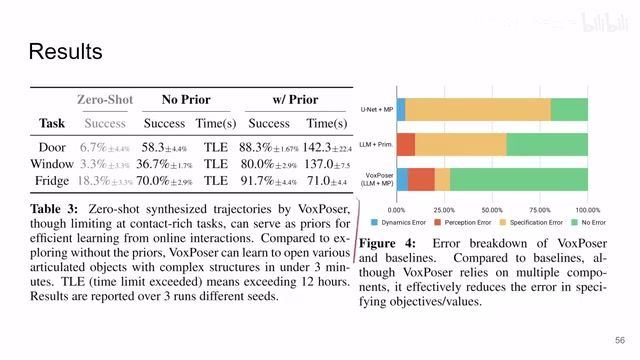
00:12:03–00:12:04 · 画面 04200:12:04–00:12:06 · 画面 043
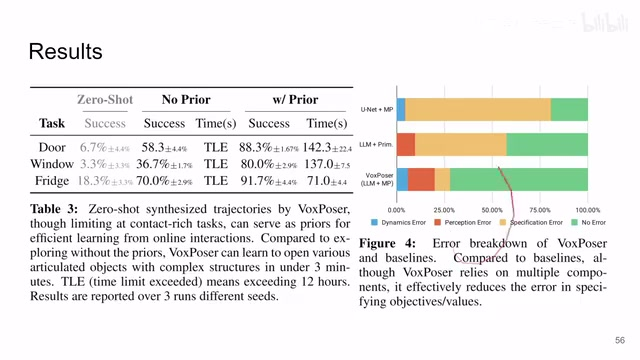
00:12:04–00:12:06 · 画面 04300:12:06–00:13:02 · 画面 044
00:12:06–00:13:02 · 画面 044这边呢是根据语言的这个反馈来做进一步的调整即向阵地向左移动 5 米这种样子那最后呢针对没见过的问题呢拆分成已经见过的问题比如说要求是半开这个抽屉啊不知道怎么就半开对吧先把它全打开然后再推回一半去那么这个呢是本文的一些独特的观察但是你也很难说这些例子是不是他这个 cherry pick 所以我们就看个乐就好了好的那么以上就是我对这篇文章一个非常快速的一个整理啊。
那总的来说呢就是解锁了另一种用这个 language model 来去控制机器人的方法那么感谢您的收看再见。
00:13:02–00:13:03 · 画面 045
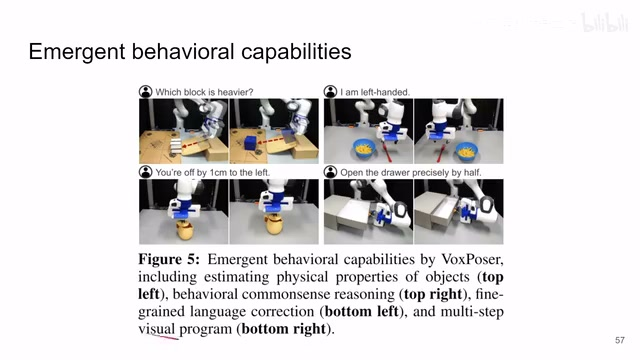
00:13:02–00:13:03 · 画面 045转写与来源说明 · 55 个自动复核提示
保留 315 个原始语音片段，55 个片段触发自动复核提示。提示仅用于定位可能的术语、重复或识别问题，不等于已确认错误。
讲解画面为源视频截图（640×360），不是可编辑 PPT 文件。全片按每秒 2 帧扫描内容变化，逐步展开页保留；连续动画保留代表画面。清晰度受源视频限制。
原视频：paper/合集_2026-10-16_多模态语言模型/[论文简析]VoxPoser Composable 3D Value Maps for Robotic...[2307.05973].mp4
SHA-256：58510305b0445f2741d88a2f1892f4c4293c7552548e400088c5d48d1af6cf5a
meta 版的 code as policy
也就是我们的 action space
那接下来说这个 value function 里面
现在我们有一个 cost function
zero-shot 的 trajectory synthesis
你就可以做这个 work through map
whatever
都去重新做这个事情
那么在这个重新做的基础上
作者还用了这个 MPC
MPC 就是 model predictive control
简单来说
就是你维护一个 model
这个 model 就像
你了解 model-based reinforcement learning 的朋友
对吧
就是 model-based 里面这个 model
就是 model 是什么
就是你拿到你当前的这个 state
拿到你当前的这个 action
它能够
这个 model 能够告诉你
未来的一个 state 是什么样
就是一个先知
你告诉他你现在的情况
你要干什么
然后这先知会告诉你
未来会发生什么
这也就意味着
是这个 Zero-shot Trajectory Synthesis
作为一个 guidance
因为你全都是掉了大模型，
也没有自己训练的东西，
整个就是非常直接的粘起来就完了。
那下面我们来看它具体的实现。
这个 language model
我们之前说了
拆 GPT-4
然后呢
它的这个 vision language model
很有意思
那首先是用这个 OWL-ViT
是一个 open world detector
把你图片中想要的物体，
给它检测出来
检测出来之后
扔到这个 Segment Anything 里面
分割一下
分割出来
然后再过这个 XMEM
对吧
在整个视频里面
整个再 tracking 一下
这个 MotionPlanner
这个 EnvironmentDynamicsModel
全文按视频语音与画面制作。原论文可从上方链接下载；完整资料包保留全文、原始逐字稿、字幕和校对记录。